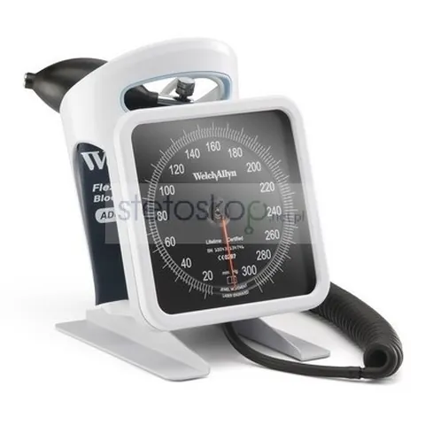
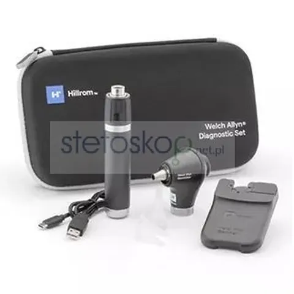
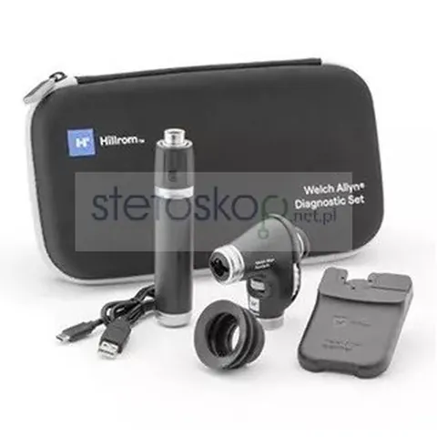
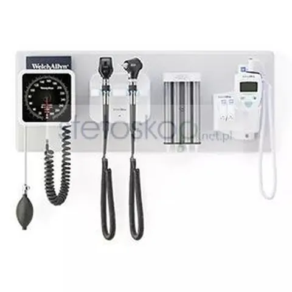
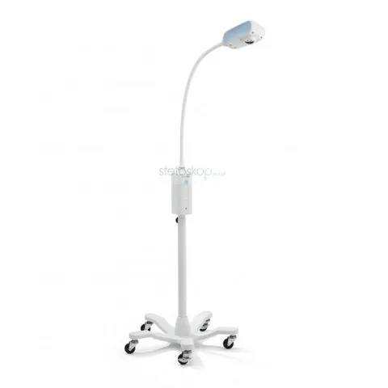
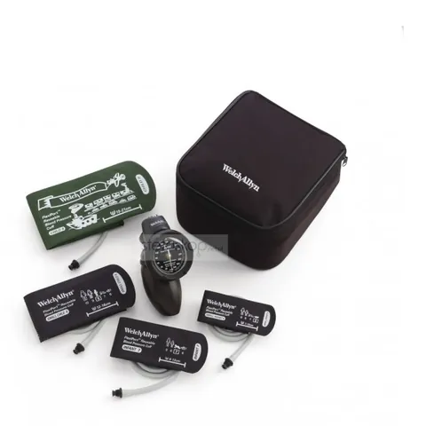
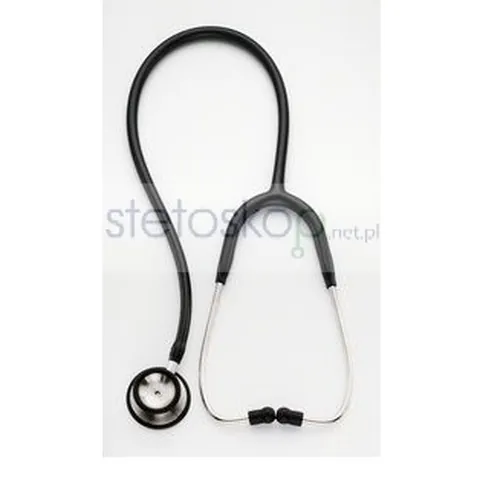
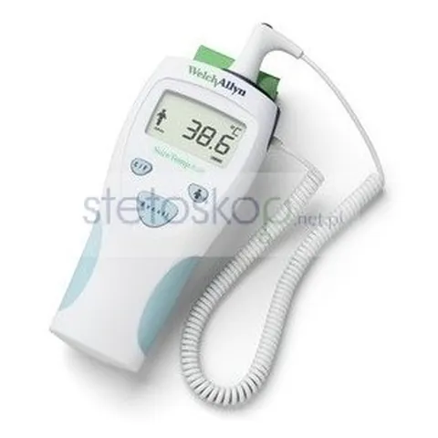
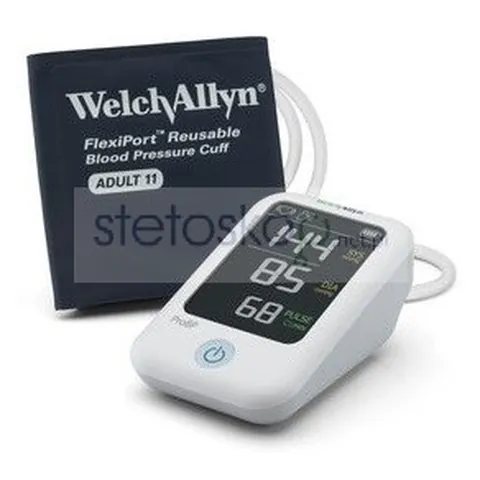
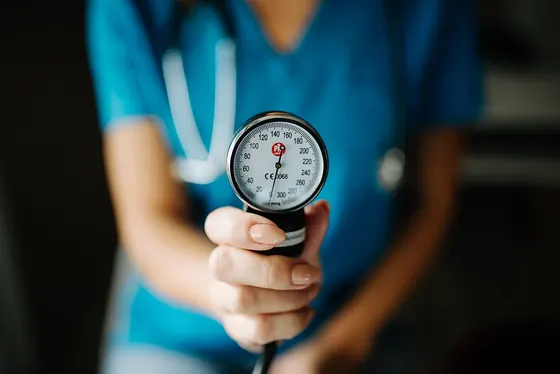

Sprzęt diagnostyczny Welch Allyn dla gabinetów, przychodni i szpitali
Od 1992 roku pomagamy lekarzom dobrać aparaturę diagnostyczną - od otoskopu po zestaw ścienny. Tylko oryginalne, fabrycznie nowe produkty.
Doradzimy przy wyborze: 61 825 45 61
Biuro Obsługi Klienta, ul. Piątkowska 122, Poznań
Oferta
Instrumenty dla praktyk lekarskich różnych specjalności, przychodni, szpitali i gabinetów weterynaryjnych. Zaopatrujemy też sklepy medyczne, firmy farmaceutyczne i apteki.

Diagnostyka funkcji życiowych
Ciśnieniomierze, mankiety, termometry, pulsoksymetry, EKG.

Diagnostyka ucha, nosa i gardła
Otoskopy, wzierniki i akcesoria otoskopowe.

Diagnostyka oka
Oftalmoskopy, w tym panoramiczne PanOptic.

Zestawy diagnostyczne
Zestawy kieszonkowe, w etui i ścienne do gabinetu.

Oświetlenie medyczne
Lampy diagnostyczne Green Series, czołowe i latarki.
Polecane produkty




Sklep internetowy działa bez zmian - strona firmowa prowadzi do niego z każdej kategorii.
Wyposażamy gabinety od pierwszego otoskopu
Prawidłowo i szybko postawiona diagnoza to podstawa skutecznej terapii. Dlatego pomagamy dobrać instrumenty tak, by uzupełniały wiedzę i umiejętności personelu.
- praktyki lekarskie
- przychodnie
- szpitale
- gabinety i kliniki weterynaryjne
- sklepy medyczne
- firmy farmaceutyczne
- apteki

- Pomoc w doborzeDoradzamy przy wyborze poszczególnych instrumentów i kompleksowym wyposażeniu gabinetu.
- Prezentacja u klientaPokazujemy produkty w miejscu i czasie dogodnym dla Państwa.
- Dogodne warunki zakupuDla gabinetów, placówek i odbiorców hurtowych.
AKMED - z Welch Allyn od 1992 roku
Od początku działalności jesteśmy dostawcą aparatury medycznej amerykańskiej firmy Welch Allyn, uznanego na świecie producenta urządzeń diagnostycznych - dziś w grupie Baxter. To sprzęt o legendarnej trwałości, prostej obsłudze i wyjątkowej ergonomii.
Dostarczamy wyłącznie produkty oryginalne i fabrycznie nowe, a do sprzętu, który już pracuje w gabinecie, mamy akumulatory, żarówki i części zamienne.
Kontakt
- Biuro Obsługi Klienta
- ul. Piątkowska 122 lok. 13
60-649 Poznań - Komórka
- 601 72 84 89
- Faks
- 61 828 84 34
- info@akmed.com.pl
- Sklep
- stetoskop.net.pl
- Siedziba
- ul. Tomasza Zana 14, 60-691 Poznań